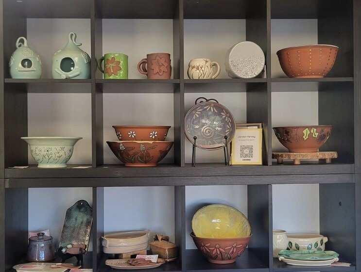

Clayshare – A group of over 37,000 members founded by Jessica Putnam Phillips. She shares glaze information, kiln unloading, and construction videos.
Searching for and finding channels creative by potters who are generous with their knowledge and experience is key. In time you can have incredibly easy access to unlimited hours of educational videos covering such topics as: simple first-time projects, hand building, wheel throwing, setting up a studio, using pre-made glazes as well as, how to create and mix your own glaze recipes.
John Britt – Complete Guide to Mid-Range Glazes. This particular group is for people who have mixed and are using glaze recipes from John Britt’s book. Mixing your own glazes for the first time, or the fifty-first time can be confusing and possibly frustrating. This group provides you with the support of your peers. They can offer suggestions, condolences, and inspiration.